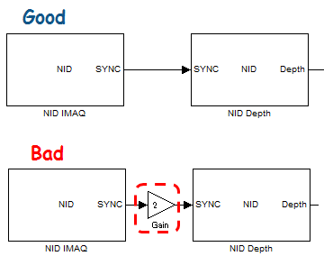

NID IMAQ
Acquire all data from Kinect Device. Simulink Support for Kinect blocks need to be simulated with fixed step.
Contents
Input Signal
- Angle (int32): The elevation angle relative to gravity, in degrees. This input is available only when Kinect SDK::Set sensor angle by Input was checked. The value between -27 to 27 [deg] is reflected to the sensor, otherwise, the sensor angle remains same.
Output Signal
- SYNC (uint32): Data acquision time in msec to synchronize with Depth/Motion/Image/Skeleton/IR blocks. The SYNC output signal has to directly feed into Depth/Motion/Image/Skeleton/IR blocks.
- Angle (int32): The elevation angle relative to gravity, in degrees. Angle value range is -64 to 64 [deg]. Angle output signal is available when Kinect SDK::Read sensor angle parameter was checked.
Block Parameters
- Adjust view point to Image: Adjust view point of Depth/Motion/Skeleton/IR data to the view point of Image data. If Image block is not used in the model, this parameter does not affect.
- Mirror image: Generate mirrored image data. It affects all device data.
- Sample time: Sample time has to be greater than or equal to 1/FPS [sec] according to the Resolution and FPS parameter. NID IMAQ block has internal wait until the specified period (= Sample time) is elapsed from the last data acquision.
- OpenNI::Resolution: Resolution and FPS (Frame Per Second) configurations for OpenNI.
- OpenNI::Need PSI pose for calibration of Skeleton tracking: Choose to have PSI pose or pose less for skeleton tracking calibration.
Note that the pose less calibration requires versions of OpenNI and PrimeSense NITE which support the pose less calibration.
- Kinect SDK::Set sensor angle by Input: Set sensor elevation angle relative to gravity in degrees by input. If valid value is within -27 to 27 [deg]. Note that internal sensor angle sampling rate during simulation is restricted 1 second due to Kinect hardware specification. If specified value exceeded the above range, the last specified sensor angle is kept.
- Kinect SDK::Sensor angle: The elevation angle relative to gravity, in degrees. Sensor angle value has to be within -27 to 27 [deg].
- Kinect SDK::Read sensor angle: Configuration to read Kinect elevation angle.
- Kinect SDK::Near mode: The Kinect Near Mode configuration which enables the depth camera to see objects as close as 40 centimeters in front of the sensor.
- Kinect SDK::Seated mode: The Kinect Seated Mode configuration which enables the Skeleton Tracking to track only upper body.
- Kinect SDK::Skeleton smoothing parameters: There are five parameters (Smoothing / Correction / Prediction / Jitter Radius / Max Deviation Radius). Default parameter values are [0.5 0.5 0.5 0.05 0.04].
- Smoothing: Smoothing parameter in the range [0.0, 1.0] inclusive. A higher value corresponds to more smoothing. Passing 0 causes the raw data to be returned. As the smoothing value is increased responsiveness to the raw data decreases; therefore, increased smoothing leads to increased latency.
- Correction: Correction parameter in the range [0.0, 1.0] inclusive. A higher value corrects toward the raw data more quickly, a lower value corrects more slowly and appears smoother.
- Prediction: The number of frames to predict into the future, which must be greater than or equal to zero. Values greater than 0.5 will likely lead to overshoot when the data changes quickly; dampen the overshoot effect by using a smaller value of Max Deviation Radius.
- Jitter Radius: The jitter-reduction radius, in meters. Any jitter beyond this radius is clamped to the radius.
- The maximum radius (in meters) that filtered positions can deviate from raw data. Filtered values that would exceed this radius from the raw data are clamped at this distance, in the direction of the filtered value.
- Kinect SDK::Infer skeleton joints position: If The skeleton joint positions could not be tracked, the positions are inferred from previous frame data.
How to connect NID IMAQ and other NID blocks.
